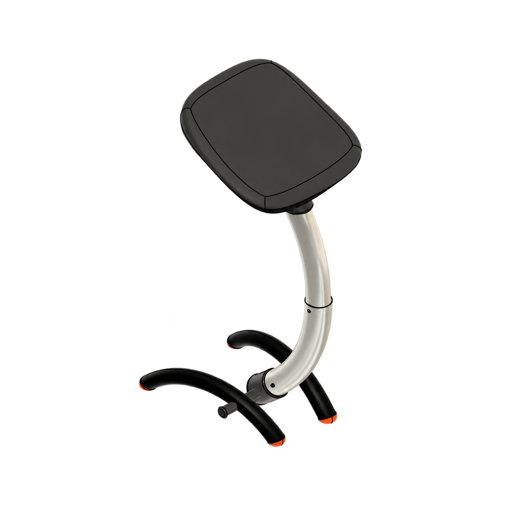

01 — C-SEAT / ASIENTOPROYECTO ACADÉMICO
2026C-seat — Asiento
Diseño de asiento · Fotografía deportiva. Explorar proyecto ↗
Diseño Industrial · Portfolio 2026
3.er año · Universidad Nacional de La Plata
Estudiante de tercer año. Exploro cómo las ideas se convierten en objetos, experiencias y soluciones cotidianas.
Curiosidad en práctica
Me interesa entender cómo usamos las cosas y encontrar nuevas maneras de hacerlas más claras, útiles y significativas. Actualmente curso tercer año de Diseño Industrial y desarrollo proyectos que conectan investigación, forma y materialidad.
Ideas que toman forma
Una muestra de procesos, pruebas y objetos en desarrollo.

01 — C-SEAT / ASIENTODiseño de asiento · Fotografía deportiva. Explorar proyecto ↗
Un espacio para mostrar experimentación, prototipos o una búsqueda formal.
Sumá el contexto, el desafío y la solución que propusiste.
Las tarjetas son una estructura inicial: agregá tus proyectos y reemplazá las imágenes abstractas.
Recorrido y formación
Diseño Industrial en la Universidad Nacional de La Plata.
UNLP · Argentina
Estudiante de tercer año · En curso
¿Tenés una idea en mente?
Para conversar sobre proyectos, colaboraciones o compartir mi CV:
galadevincenti123@gmail.com